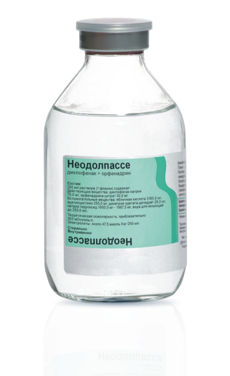
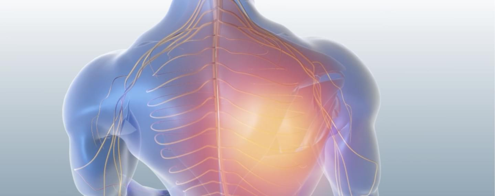

Показания к применению
1
Острый вертеброгенный болевой синдром
Кратковременное лечение болевого синдрома
2
Корешковые боли
Кратковременное лечение болевого синдрома
3
Вертеброгенные боли
Кратковременное лечение болевого синдрома
4
Постоперационный болевой синдром
Кратковременное лечение болевого синдрома


Форма выпуска
Раствор для инфузий диклофенак 75 мг и орфенадрин 30 мг
По 250 мл препарата в стеклянных флаконах (стекло типа II по Евр. Фарм.)
С нанесением риски (одной или нескольких) методом литья или без, укупоренных резиновыми
пробками и обкатанных алюминиевыми колпачками с пластиковыми крышками для контроля
первого вскрытия.
5 флаконов с держателями или без, вместе с инструкцией по применению помещают в коробку
картонную.
Механизм действия

Медицинское применение
СОСТАВ
Подробнее
Состав
1 флакон содержит: действующие вещества: диклофенак натрия 75,0 мг,
орфенадрина цитрат 30,0 мг; вспомогательные вещества: яблочная кислота, ацетилцистеин, динатрия
эдетата дигидрат, натрия гидроксид, вода для инъекций.
1 флакон содержит: действующие вещества: диклофенак натрия 75,0 мг, орфенадрина цитрат 30,0 мг
ФАРМАКОДИНАМИКА
Подробнее
Фармакодинамика
Неодолпассе — комбинированный лекарственный препарат, содержащий
нестероидное противовоспалительное средство диклофенак и миорелаксант центрального действия
орфенадрин. Диклофенак обладает анальгезирующим, жаропонижающим и противовоспалительным
действием.
Неселективно ингибируя циклооксигеназу 1 и 2 типа (ЦОГ-1 и ЦОГ-2), нарушает метаболизм
арахидоновой кислоты и синтез простагландинов, являющихся основным звеном в развитии воспаления.
Орфенадрин — миорелаксант центрального действия, снижает патологически повышенный мышечный
тонус, обладает парасимпатолитическим, местноанестезирующим и умеренным антигистаминным
действием.
Неодолпассе — комбинированный лекарственный препарат, содержащий нестероидное противовоспалительное
средство
ПОКАЗАНИЯ К ПРИМЕНЕНИЮ
Подробнее
Показания к применению
Кратковременное лечение болевого синдрома при следующих заболеваниях:
острый вертеброгенный болевой синдром, корешковые и вертеброгенные боли; постоперационный
болевой синдром.
Кратковременное лечение болевого синдрома при следующих заболеваниях
ХРАНЕНИЕ
Подробнее
Хранение
Хранить в защищенном от света месте при температуре не выше 25 °С. Срок
годности 1 год. Условия отпуска: по рецепту.
Перед использованием необходимо ознакомится с полной инструкцией по медицинскому применению.
Хранить в защищенном от света месте при температуре не выше 25 °С
Диклофенак фармакокинетика
Подробнее
Диклофенак фармакокинетика
Самые высокие концентрации диклофенака в плазме достигаются
непосредственно после инфузии, что приводит к быстрому наступлению эффекта. Инфузия позволяет
избегать пиков концентрации диклофенака в плазме. После внутривенного введения 75 мг
диклофенака, его максимальная концентрация в плазме составляет 1,9 мкг/мл на протяжении более 2
часов и находится в линейной зависимости от введенной дозы. Системная биодоступность после
внутривенного введения диклофенака приблизительно в 2 раза больше, чем после его перорального
или ректального применения, поскольку в последних случаях около половины количества диклофенака
метаболизируется при «первичном прохождении» через печень. Конечный период полувыведения (T1/2)
составляет 1-2 ч. T1/2 4-х метаболитов, включая два фармакологически активных, также
непродолжителен и составляет 1-3 ч.
Самые высокие концентрации диклофенака в плазме достигаются непосредственно после инфузии, что приводит
к быстрому наступлению эффекта
Орфенадрин фармакокинетика
Подробнее
Орфенадрин фармакокинетика
Максимальный уровень орфенадрина в плазме достигается уже через 2 мин
после внутривенного введения. Большая часть орфенадрина метаболизируется и преимущественно
выводится через почки. Конечный период полувыведения Т1/2 составляет 14 ч.
Максимальный уровень орфенадрина в плазме достигается уже через 2 мин после внутривенного введения
Способ применения и дозы
Подробнее
Способ применения и дозы
Внутривенно, в виде инфузии. Стандартная доза 250 мл 1 раз в сутки. Один
флакон препарата (250 мл) содержит 75,0 мг диклофенака. В исключительных случаях 2 раза в сутки
по 250 мл с интервалом между инфузиями не менее 8 ч. Продолжительность инфузии 250 мл препарата
составляет 1,5 — 2 ч (2,1-2,8 мл/мин). Благодаря низкой осмолярности (приблизительно 303
мОсмоль/л) препарат может вводиться через периферическую вену. Не следует применять препарат
Неодолпассе более двух дней подряд. Максимальная суточная доза не должна превышать 150 мг
диклофенака в сутки.
Внутривенно, в виде инфузии. Стандартная доза 250 мл 1 раз в сутки.
Влияние на способность управлять транспортными средствами
Подробнее
Влияние на способность управлять транспортными средствами
Пациентам, у которых на фоне применения препарата возникают зрительные
нарушения, головокружение, сонливость, вертиго или другие нарушения со стороны центральной
нервной системы, необходимо воздержаться от управления автомобилем, работы с механизмами и видов
деятельности, требующих быстроты психомоторных реакций.
Пациентам, у которых на фоне применения препарата возникают зрительные нарушения, головокружение,
сонливость, вертиго или другие нарушения со стороны центральной нервной системы
Вопрос
В последних клинических рекомендациях говорится, что лучше
использовать калиевую соль диклофенака. В Неодолпассе натриевая. Насколько это оправдано и
безопасно? Нужно ли учитывать количество натрия, которое пациент получает с инфузией?
Отвечает
C.К. Зырянов
Вопрос
В последних клинических рекомендациях говорится, что лучше
использовать калиевую соль диклофенака. В Неодолпассе натриевая. Насколько это оправдано и
безопасно? Нужно ли учитывать количество натрия, которое пациент получает с инфузией?
Отвечает
C.К. Зырянов
Вопрос
В последних клинических рекомендациях говорится, что лучше
использовать калиевую соль диклофенака. В Неодолпассе натриевая. Насколько это оправдано и
безопасно? Нужно ли учитывать количество натрия, которое пациент получает с инфузией?
Отвечает
C.К. Зырянов
Вопрос
В последних клинических рекомендациях говорится, что лучше
использовать калиевую соль диклофенака. В Неодолпассе натриевая. Насколько это оправдано и
безопасно? Нужно ли учитывать количество натрия, которое пациент получает с инфузией?
Отвечает
C.К. Зырянов
Вопрос
В последних клинических рекомендациях говорится, что лучше
использовать калиевую соль диклофенака. В Неодолпассе натриевая. Насколько это оправдано и
безопасно? Нужно ли учитывать количество натрия, которое пациент получает с инфузией?
Отвечает
C.К. Зырянов
О компании Фрезениус Каби
Фрезениус Каби является частью немецкого концерна Фрезениус — мирового лидера в создании средств
для
оказания медицинской помощи больным в критических состояниях как в госпитальных, так и в
домашних
условиях.
Основными направлениями деятельности Фрезениус Каби являются разработка и производство
препаратов и
технологий для инфузионной терапии, парентерального и энтерального питания, химиотерапевтических
препаратов и других препаратов для внутривенного введения, а также их медико-технического
обеспечения.
Являясь неотъемлемой частью концерна Фрезениус, Фрезениус Каби занимает лидирующую позицию в
Европе
и в мире по производству и продажам препаратов для восполнения объема циркулирующей крови и
клинического питания.
По данным компании IMS Фрезениус Каби является крупнейшим в мире производителем препаратов для
внутривенного введения в целом.
О компании